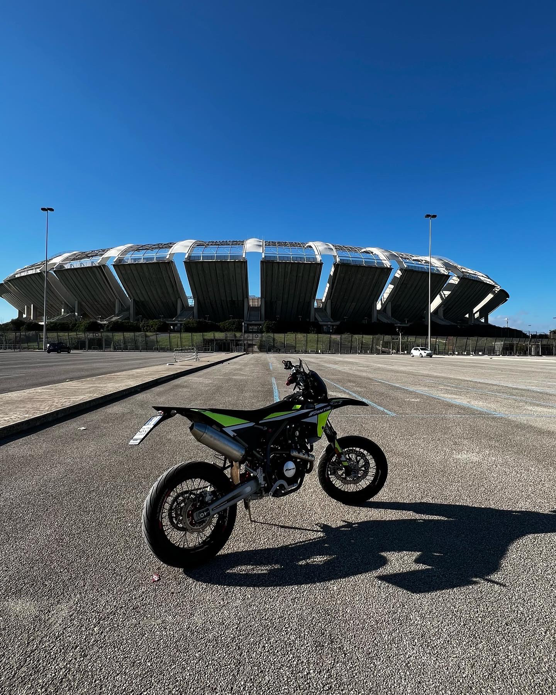

| 
| |
BiografiaPaolo Luisi è uno studente, dell'istituto N.Colamonico di Acquaviva delle Fonti. Frequenta il terzo anno del corso informatico ed è molto competente in ambito hardware e software di dispositivi digitali mobili e non. Ha la passione per le moto e ne possiede una omologata per la circolazione in strada.
StudioEsso non possiede ancora un titolo di studio in quanto ancora frequentante una scuola secondaria di secondo grado.
Conoscenze e CompetezzeLui è molto abile nello sviluppo di software in linguaggio c++. Molto abile anche nell'assemblaggio hardware di macchine smart di qualsi livello. Da quelle con caratteristiche piu basiche a quelle con accessori e componenti di livello alto.
Prospettive e ProgettiLe sue prospettive sono molto ampie in quanto lui abbia una particolare abilità nel svolgere i suoi "compiti". Esso prevede per se un bel futuro dato che ha gia le idee chiare, degli obbiettivi da raggiungere e soprattutto la voglia di portarsi sempre ad un livello di conoscenza e creazione sempre maggiore.
|
In brevePaolo è un ragazzino di 16 anni che vuole stravolgere la sua vita dopo aver finito di frequentare le scuole secondarie di secondo grado. Ha obbiettivi ben precisi e molte abilità nel suo ambito.
|
|
Contatti Non sono stati aggiunti.
|
|
|